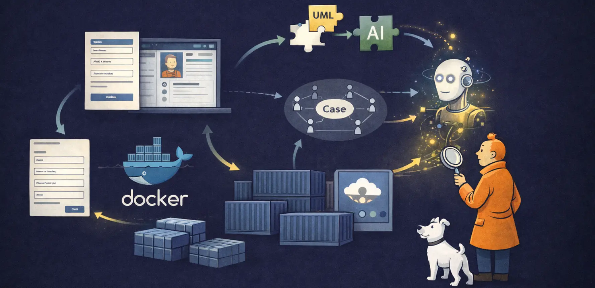
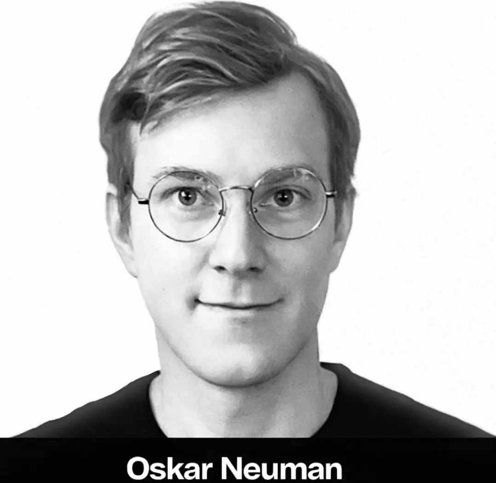
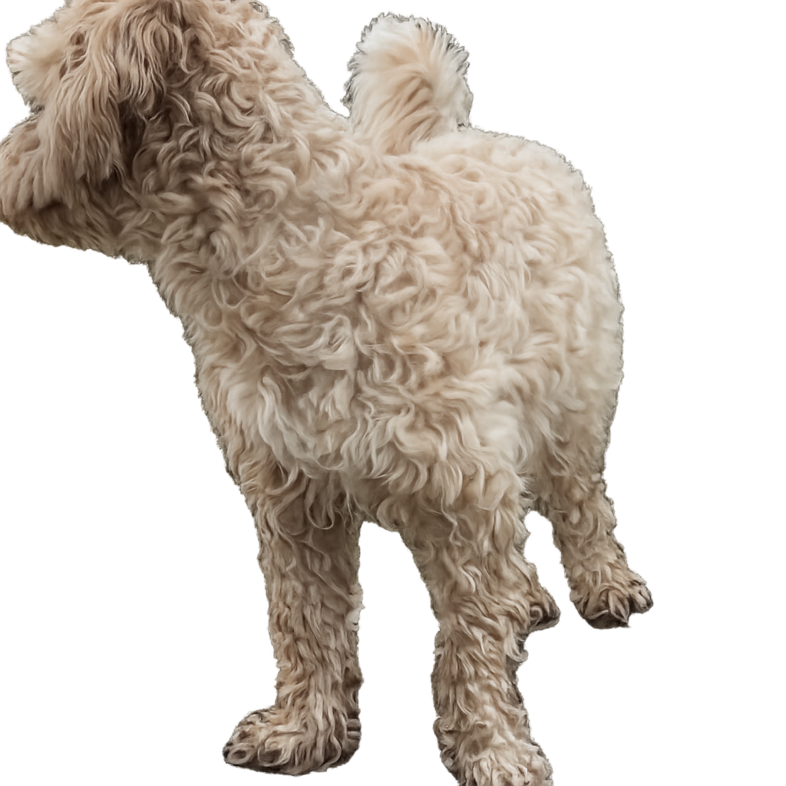
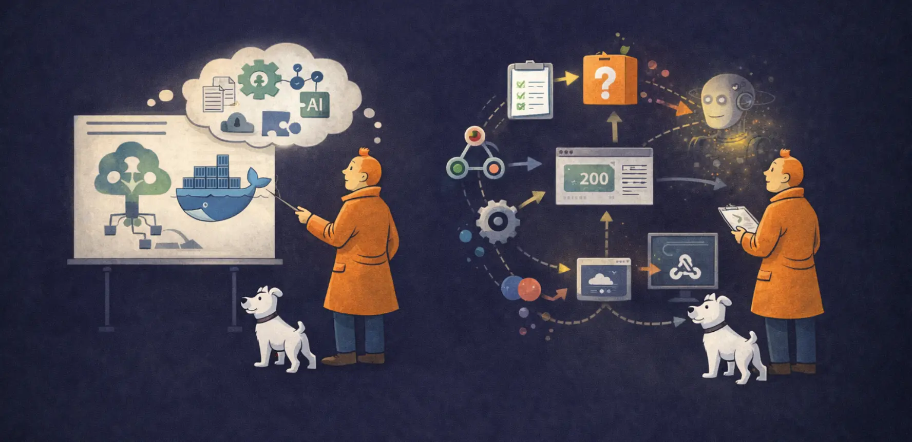
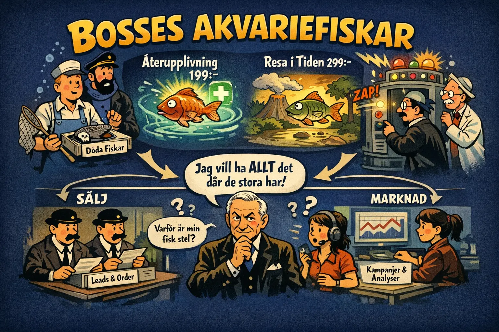
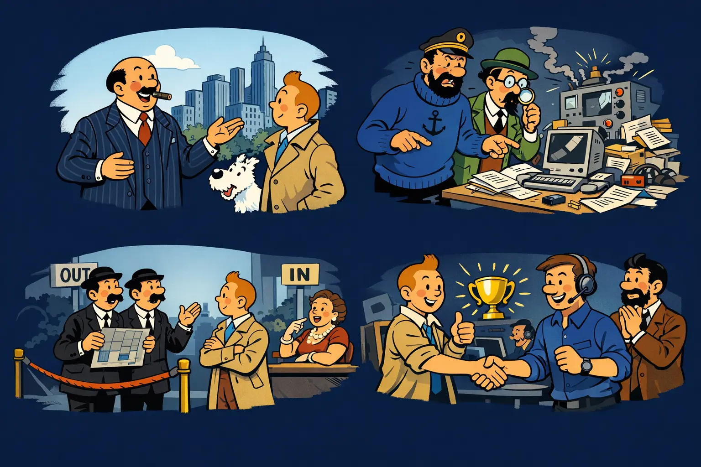
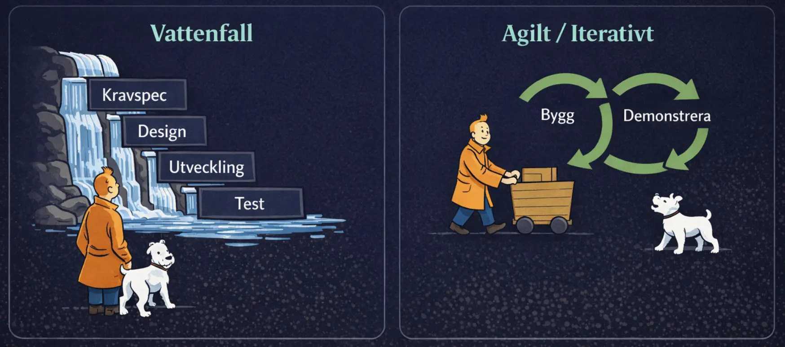
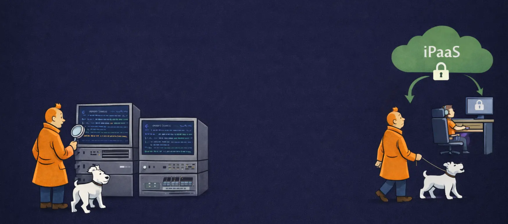
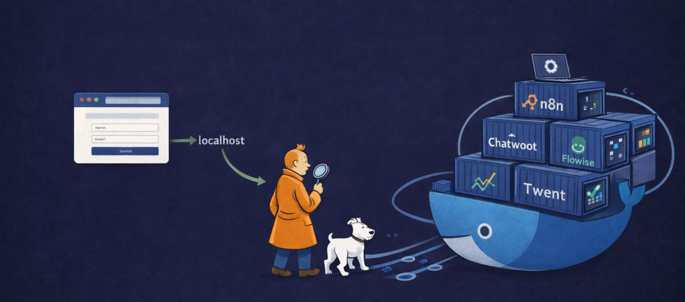
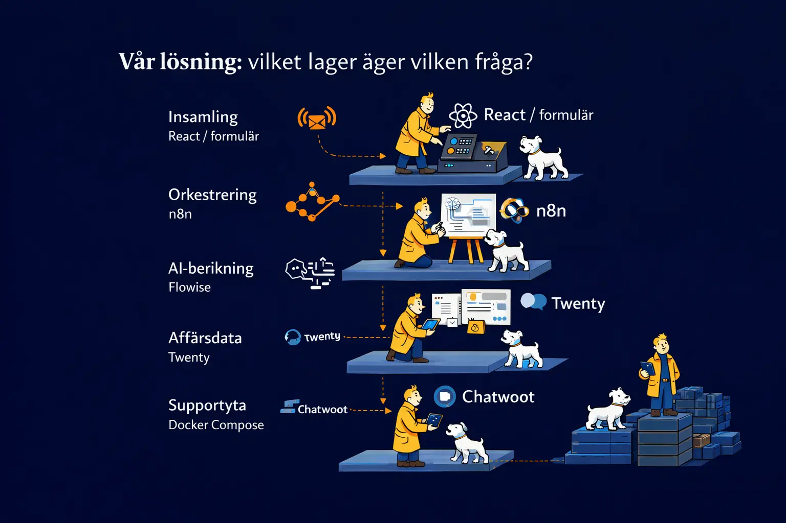

Lektion 1 · förberedande ramverk
Från leadproblem till en lokal AI + CRM-stack
Vi börjar inte i verktygen. Vi börjar i problemdomänen, i hur man modellerar ett system och i varför en lokal, modulär och öppen stack kan vara ett rimligt val för leadhantering.
Målet idag: ni ska kunna förklara varför stacken finns, vad varje del ansvarar för och hur vi undviker att låsa oss för tidigt.

Introduktion
Vem håller i det här?
Bakgrund
- Namn:
Oskar Neuman - Roll idag:
CTO & Cofounder Bostello, Konsult RetroByMistake - Arbetat med: integrationer, CRM, automation, backend, frontend, systemarkitektur
- Varför det här ämnet: jag har sett samma problem återkomma i riktiga projekt


Kursplan · progression
Två lektioner, två olika frågor
Lektion 1: Varför ser lösningen ut så här?
- Förstå problemdomänen och vårt case.
- Se hur modellering hjälper oss innan vi bygger.
- Förstå varför vi pratar om öppen källkod, lokal drift och separation of concerns.
Lektion 2: Hur läser och felsöker vi flödet?
- Statuskoder, webhookar, miljövariabler och n8n executions.
- Hur Flowise, Twenty och Chatwoot beter sig i praktiken.
- Hur vi bevisar var ett problem faktiskt sitter.
Upplägget knyter direkt till kursplanen: API:er, webhooks, integrationsplattformar, AI-modeller och dataflöden.

Case · varför vi gör det här
Problemdomänen: leadhantering som faktiskt går att arbeta i
Vårt case: Bosses Akvariefiskar
Bosse säljer akvariefiskar på ett sätt som väcker frågor. Wall Enberg vill skala upp verksamheten och säger i princip: "Jag vill ha allt det där de stora har."
- Leads kommer in via formulär och landar som svårlästa mejl.
- Data är inkonsekvent, ofullständig och svår att följa upp.
- Sälj, support och uppföljning saknar gemensam arbetsyta.
- Produkterna i sig skapar flera olika flöden: bulkorder, upsell, support och PR.

Nyckelpoängen: vi bygger inte om hela hemsidan. Vi bygger ett system bakom signalen, så att organisationen kan arbeta strukturerat med leads och frågor.
Exempel i caset: hotell som vill köpa Zombie Guppy Deluxe, kunder som undrar om Återupplivning Plus kan läggas till i efterhand, och supportfrågor i stil med "Varför rör sig inte min fisk trots premium?"
Dåtid till nutid
Leadhanteringens resa: från inkorg till AI-steg i flödet
Manuell eran
Mejl, telefon, anteckningar och någon enstaka Excel-fil.
CSV & export
Data flyttas manuellt mellan verktyg och blir lätt försenad eller fel.
iPaaS & automation
Zapier och liknande gör trigger/action begripligt för fler än utvecklare.
AI + API + CRM
Samma flöden kan nu klassificera, svara, berika och skriva vidare till rätt system.
Viktigt: många organisationer lever i flera generationer samtidigt. Det är normalt att ett modernt AI-flöde fortfarande måste prata med gamla arbetssätt.
För Bosse betyder det: från ett obegripligt mejl om "12 döda fiskar till hotellobbyn" till ett strukturerat lead med kategori, produktförslag och nästa ägare i organisationen.
Vad gör vi först?
När man påbörjar ett projekt: börja i affären, inte i ramverket
Förstå målet
Vad menar kunden med "vi vill ha allt det de stora har"?
Synliggör problemen
Vad fungerar dåligt idag? Var tappar vi data, tid och överblick?
Sätt systemgränsen
Vad ingår i vårt uppdrag och vad ingår inte?
Definiera framgång
Hur vet vi att lösningen faktiskt hjälper sälj, support och verksamheten?

I vårt case betyder det: vi avgränsar bort WordPress-ombyggnad och fokuserar på strukturerad lead- och ärendehantering bakom formuläret.
Validering före implementation
Varför det är viktigt att modellera och stämma av
Miro eller annan brainstormyta
- Bra för att fånga idéer, problem och domäner snabbt.
- Hjälper oss att se bredden i problemet.
- Risk: allt blandas i samma bild och gränserna blir otydliga.
UML eller annan tydlig modell
- Bra för att beskriva en fråga i taget.
- Gör det lättare att se ordning, ansvar, aktörer och systemgränser.
- Hjälper både utvecklare och beställare att bekräfta samma bild.
AI gör det snabbt att producera kod. Det gör det inte snabbt att rätta felaktig arkitektur i efterhand. Om modellen blir fel från början kan AI bara skala upp misstaget.
Verktyg för precision
Tre UML-liknande bilder för Bosses Akvariefiskar
Actor / use case
Här syns vilka aktörer vi bryr oss om och vilka beteenden systemet måste stödja.
Sekvensdiagram
Sekvensen visar i vilken ordning Bosses lead rör sig från kund till CRM.
Processdiagram
Processbilden hjälper eleverna att se var regex, AI, CRM och support faktiskt möts.
Poängen med de här bilderna är inte perfekt notation. Poängen är att alla i rummet ska förstå vad vi bygger, i vilken ordning och för vem.
Arbetssätt
Vattenfall och agilt arbetssätt löser olika problem
Vattenfall
- Krav specas tungt i början.
- Passar när förändring är dyr eller oönskad.
- Risk: lösningen låses innan verkliga behov är testade.
Agilt / iterativt
- Bygg små steg, visa tidigt, ändra snabbt.
- Passar när krav och behov klarnar under resan.
- Gör det lättare att skala och anpassa utan total omstart.

Många offentliga projekt blir dyra inte för att problemen är unika, utan för att kravspecen fryser lösningen för tidigt. Då byggs systemet för upphandlingen, inte för användningen.
Skalbarhet · adaption
Vendor lock-in är ett affärsproblem, inte bara ett teknikord
Vad vi vill möjliggöra
- Byta kanal utan att kasta hela lösningen.
- Skala upp utan att kostnaden exploderar i licenser.
- Låta olika team arbeta i samma kedja med tydliga ansvar.
Vad vendor lock-in betyder här
- Flödet byggs runt en enda leverantörs panel eller logik.
- När marknadsföringskanalen ändras måste ni börja om.
- Exempel: ni bygger allt kring Meta, men nästa år är "Flip-Flop" billigare och bättre.
Vi vill alltså bygga en motor som är agnostisk mot inflödet: formulär, chat, kampanj eller framtida kanal ska kunna kopplas in utan att hela modellen spricker.
Teknikval
Öppen källkod och självhostat vs iPaaS
Öppen källkod betyder att koden är öppen att granska, köra och bygga vidare på. Det ger ofta större frihet, större anpassningsbarhet och mindre beroende av att en leverantör råkar vilja stödja just din kanal.
Självhostad open source
- Mer kontroll över data, drift och anpassning.
- Lägre risk för licenslåsning.
- Ni tar också ansvar för drift, säkerhet och uppgraderingar.
iPaaS / leverantörsplattform
- Snabbt att komma igång och lätt att förstå.
- Mindre driftansvar på kort sikt.
- Kan bli dyrt eller begränsande när volym, behov eller kanal förändras.

Det här är inte en religion. Det är en balans mellan fart, kontroll och ansvar. I kursen väljer vi en lokal stack för att göra ansvar och gränser synliga.
Minnesregel: Zapier skalar kostnad med framgång. Self-host skalar komplexitet med framgång.
Lokal driftmodell
Vad Docker är, och varför containrar passar i undervisningen
Containermiljö i praktiken
- Varje tjänst körs i sin egen container.
docker compose upstartar hela miljön tillsammans.- Tjänsterna delar nätverk men har olika ansvar.
- Det gör miljön repeterbar mellan datorer och tillfällen.
Browser / formulär -> localhost -> n8n / Flowise / Twenty / Chatwoot -> samma Docker-nätverk

Separation of concerns
Vår lösning: vilket lager äger vilken fråga?
React / formulär
Samlar in signalen från användaren och skickar den vidare in i kedjan.
n8n
Tar emot webhookar, styr villkor och kopplar ihop resten av systemen.
Flowise
Kapslar AI-logik och prompts så att n8n inte behöver bära allt själv.
Twenty
CRM-lagret där kontakt, affär och uppföljning kan fortsätta.
Chatwoot
Konversationsdelen för ärenden, chat och kundserviceflöden.
Docker Compose
Binder ihop allt och gör miljön körbar om och om igen.

Grundprincipen är enkel: ett verktyg ska inte behöva vara allt samtidigt. Ju tydligare ansvar per lager, desto lättare att förstå, byta ut och felsöka.
Exempel: React samlar in frågan "Kan vi köpa 24 Zombie Guppy Deluxe?", Flowise klassar om det är bulk_order eller press_or_partnership, Twenty får affärsspåret, och Chatwoot tar "Varför rör sig inte min fisk?"-samtalen.
Från signal till handling
Så hänger huvudflödet ihop i vår laborativa modell
- I lektion 1 tittar vi på varför Bosses flöde ser ut så här.
- I lektion 2 går vi in i hur vi läser fel, payloads, statuskoder och executions i samma Bosses-case.
- Demo idag: skicka in en signal om död fisk, följ kedjan, och se varför separationen mellan tjänsterna spelar roll.
Om lektion 1 svarar på varför, svarar lektion 2 på var det gick fel.